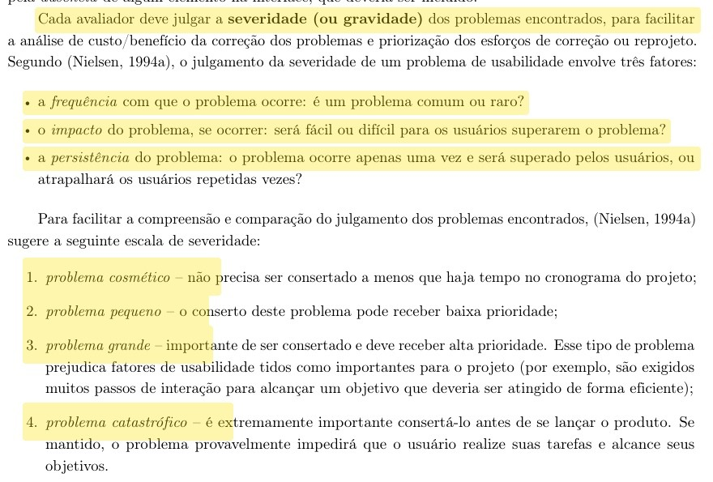
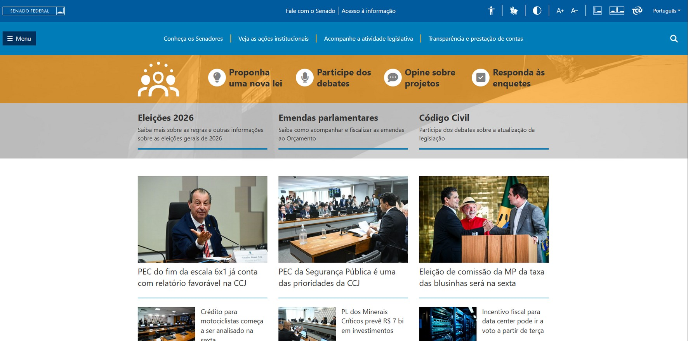
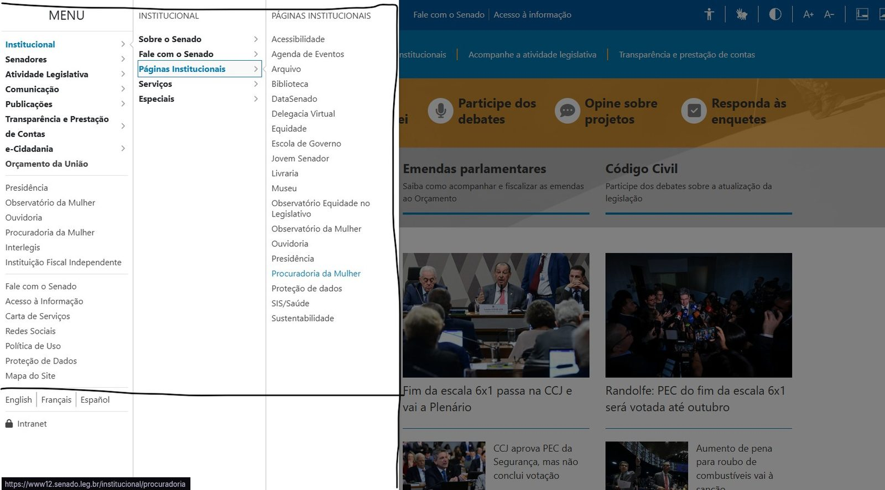
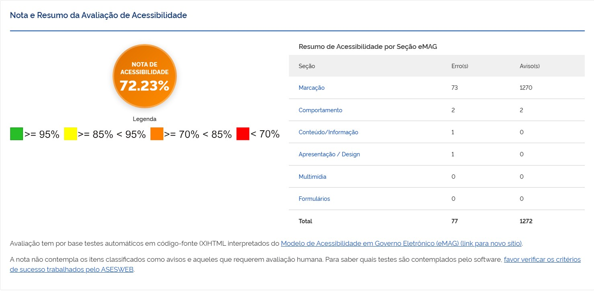
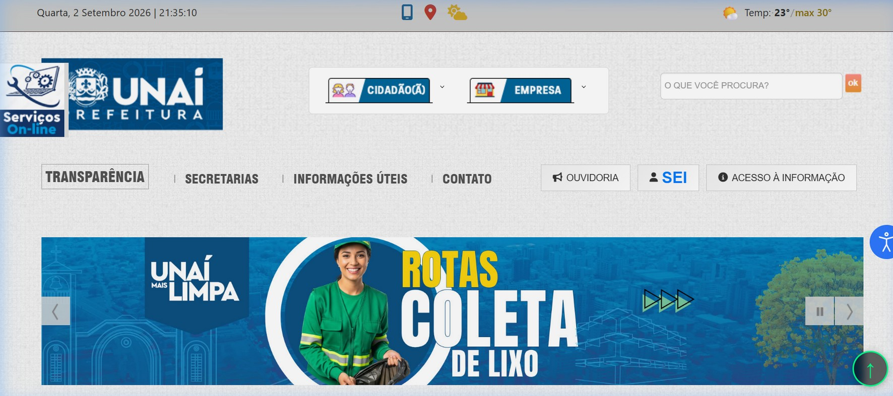
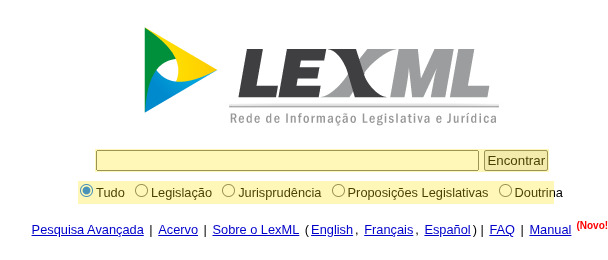

Responsável: Caio Breno de Souza Bezerra — Pesquisa e seleção do site
Sites avaliados¶
Tabela de contribuição¶
A Tabela 1 registra quem atuou neste artefato. Cada linha é uma atividade.
| Integrante | Contribuição | Artefato / atividade |
|---|---|---|
| Caio Breno de Souza Bezerra | Consolidação da lista de candidatos | Lista de candidatos |
| Caio Breno de Souza Bezerra | Comparação dos candidatos por critério | Síntese da comparação |
| Caio Breno de Souza Bezerra | Inspeção individual do LexML | LexML |
| Caio Breno de Souza Bezerra | Planejamento individual do LexML | Planejamento |
| Caio Breno de Souza Bezerra | Relatório individual do LexML | Relatório |
| Israel Soares de Paiva | Inspeção individual do Portal do Senado Federal | Senado |
| Israel Soares de Paiva | Planejamento individual do Portal do Senado Federal | Planejamento |
| Israel Soares de Paiva | Avaliação individual do Portal do Senado Federal | Avaliação |
| Heitor Pinheiro Gonçalves das Chagas | Inspeção individual do Portal da Transparência do DF | Portal da Transparência |
| Heitor Pinheiro Gonçalves das Chagas | Planejamento individual do Portal da Transparência do DF | Planejamento |
| Heitor Pinheiro Gonçalves das Chagas | Relatório individual do Portal da Transparência do DF | Relatório |
| Bruno Ferreira Dornelas | Inspeção individual do portal de Unaí | Unaí |
| Bruno Ferreira Dornelas | Planejamento individual do portal de Unaí | Planejamento |
| Bruno Ferreira Dornelas | Relatório individual do portal de Unaí | Relatório |
Tabela 1 — Contribuição neste artefato.
Fonte: elaboração do Grupo 06 (2026).
Introdução¶
Na Entrega 1, o grupo precisava apresentar os sites considerados antes de justificar o objeto do semestre. Quatro integrantes concluíram o planejamento e a avaliação individuais de um portal governamental, com o framework DECIDE e avaliação heurística. Este artefato reúne esses candidatos e disponibiliza, para cada site, os dois documentos padronizados — planejamento e relatório — para consulta do professor.
O objeto do projeto é o Portal do Senado Federal. Os demais candidatos existem para mostrar que a escolha foi comparada, e não assumida: a Síntese da comparação confronta os quatro portais por critério, e a justificativa completa está em Site escolhido.
Sites e documentos padronizados¶
A Tabela 2 lista o site inspecionado por cada integrante e os dois PDFs padronizados correspondentes. Os arquivos são a versão entregue na atividade individual, já padronizada, e abrem neste site.
| Site | Endereço | Integrante | Planejamento | Relatório / segundo documento |
|---|---|---|---|---|
| Portal do Senado Federal | https://www12.senado.leg.br/ | Israel Soares de Paiva | ||
| Portal da Transparência do DF | https://www.transparencia.df.gov.br/ | Heitor Pinheiro Gonçalves das Chagas | ||
| Prefeitura Municipal de Unaí (MG) | https://www.prefeituraunai.mg.gov.br/pmu2/ | Bruno Ferreira Dornelas | ||
| LexML Brasil | https://www.lexml.gov.br/ | Caio Breno de Souza Bezerra |
Tabela 2 — Candidatos, responsáveis e documentos padronizados.
Fonte: elaboração do Grupo 06 (2026).
A Tabela 2 concentra o acesso aos oito PDFs. Luis Henrique Arruda Luna não produziu inspeção individual de um quinto portal; o grupo trabalhou com os quatro candidatos acima.
Método das inspeções individuais¶
Cada integrante planejou a avaliação com o framework DECIDE e inspecionou a interface com avaliação heurística, nas dez heurísticas de Nielsen (NIELSEN, 1994; BARBOSA; SILVA, 2010, cap. 12). A gravidade dos problemas usou a escala de 0 a 4 (cosmético a catastrófico), segundo frequência, impacto e persistência.
Autor do item: Caio Breno de Souza Bezerra
Barbosa e Silva (2010, p. 284) organizam a gravidade a partir de três fatores — frequência, impacto e persistência — e da escala de Nielsen, de problema cosmético a catastrófico. Essa escala foi a referência comum das fichas individuais, e está reproduzida na Figura 1 (Apêndice A).
Portal do Senado Federal¶
Israel Soares planejou e executou a avaliação do Portal do Senado Federal, com o framework DECIDE no planejamento e avaliação heurística na inspeção. O escopo foi a página inicial e os menus principais de navegação (Institucional, Senadores, Atividade Legislativa, Comunicação, Publicações, Transparência e Prestação de Contas e e-Cidadania), com foco na arquitetura de informação e na localização de serviços — acompanhar um projeto de lei, participar de uma consulta pública, chegar aos dados de um senador.
Problemas registrados nas fichas de violação, com severidade na escala de Nielsen:
- Mega-menu Institucional exibe mais de 30 links de uma vez, em cinco blocos, sem hierarquia entre itens de uso frequente (Ouvidoria, Visite o Senado) e itens sazonais (hotsites comemorativos) — heurística 7, projeto estético e minimalista, severidade 3 (grave).
- Portal disperso por vários subdomínios (
www12,www25,legis,www9,atom,saberes,livraria), cada um com identidade visual e padrão de navegação próprios — heurística 4, consistência e padronização, severidade 3 (grave). - Manchetes e legendas usam siglas e jargão legislativo sem explicação (CCJ, PEC 221/2019, CMMPV 1.357/2026) — heurística 2, correspondência com o mundo real, severidade 2 (simples).
A dor principal é a arquitetura de informação: o portal foi organizado a partir do modelo mental de quem já conhece o processo legislativo, não do cidadão comum. É este o site escolhido pelo grupo. A justificativa detalhada está em Site escolhido.
A Figura 2 mostra a densidade de seções e atalhos da página inicial e a Figura 3 registra o mega-menu Institucional aberto (Apêndice A). Os dois PDFs padronizados estão na Tabela 2.
Portal da Transparência do Distrito Federal¶
Heitor Pinheiro inspecionou o Portal da Transparência do Distrito Federal. O objetivo foi verificar a conformidade com o e-MAG e com o WCAG, com apoio dos validadores ASES e WAVE e inspeção manual no navegador.
Problemas principais:
- Texto alternativo ausente e 47 links vazios (WCAG 1.1.1).
- Contraste insuficiente no menu superior (WCAG 1.4.3).
- Campos da Superbusca sem rótulo associado (WCAG 3.3.2 e 1.3.1).
- Cabeçalhos de tabela vazios (WCAG 1.3.1).
- Uso de
target="_blank"em links internos, sem aviso de nova aba (WCAG 3.2.5).
A dor principal é o acesso de pessoas que usam tecnologias assistivas a receitas, despesas e painéis públicos. O site não segue como objeto do semestre: a inspeção é sólida, mas os achados se concentram em conformidade técnica de marcação — correções verificáveis e pontuais (alt, razão de contraste, label, scope). O Senado oferece, além de acessibilidade, problemas de arquitetura de informação e de fluxo de navegação, que sustentam melhor as etapas de perfil de usuário, storyboard, protótipo de papel e alta fidelidade.
A Figura 4 mostra a página inicial no momento da inspeção, com o painel do WAVE, e a Figura 5 traz a nota 72,23% apurada no ASES, abaixo do patamar verde de 95% (Apêndice A). Os documentos padronizados estão na Tabela 2.
Portal da Prefeitura Municipal de Unaí¶
Bruno Ferreira inspecionou o portal da Prefeitura de Unaí. O planejamento e o relatório usaram DECIDE e avaliação heurística, com quatro tarefas (homepage, busca, transparência e serviços).
Problemas principais:
- Painel lateral de serviços abre sozinho e cobre o conteúdo (heurística 8 — estética e design minimalista).
- Pop-up automático de WhatsApp na Transparência (heurística 3 — controle e liberdade do usuário).
- Dois cards Alvará com o mesmo ícone (heurística 4 — consistência e padrões).
- Resultado de busca expõe trecho de CSS no lugar da descrição (heurística 2 — correspondência com o mundo real).
- Busca vazia sem orientação e títulos truncados (tícias ::...).
A dor principal são interrupções não pedidas no primeiro acesso. O site não segue como objeto do semestre: os problemas existem, mas o município de Minas Gerais afasta o grupo de usuárias e usuários acessíveis para as sessões de avaliação em Brasília.
A Figura 6 apresenta a homepage depois do fechamento do painel automático (Apêndice A). Os dois PDFs padronizados estão na Tabela 2.
LexML Brasil¶
Caio Breno inspecionou o LexML, rede de informação legislativa e jurídica. O planejamento DECIDE e o relatório heurístico cobriram busca simples, pesquisa avançada e abertura do texto vigente, em 29 de agosto de 2026.
Problemas principais:
- A caixa de pesquisa não diz o que pode ser digitado (heurística de reconhecimento em vez de memorização).
- A página inicial não destaca a busca como ação principal.
- A pesquisa avançada usa termos técnicos sem explicação (problema prioritário).
- O resumo da consulta mostra operadores internos em inglês.
- Busca vazia devolve milhões de resultados.
- Filtros só saem por um
[X]pequeno; FAQ e Manual somem nas páginas internas. - O registro não deixa claro qual link abre o texto vigente (problema prioritário).
A dor principal é a linguagem da pesquisa avançada e a escolha entre versões do documento. O site não segue como objeto do semestre: o recorte é viável e a inspeção é completa, mas o público cotidiano é mais jurídico do que o cidadão leigo, o que dificulta recrutar participantes representativos.
A Figura 7 mostra a busca da página inicial, ponto de partida das tarefas T1 a T3 (Apêndice A). Os dois PDFs padronizados estão na Tabela 2.
Síntese da comparação¶
A Tabela 3 confronta os quatro candidatos pelos critérios que o grupo considerou relevantes para sustentar as oito etapas da disciplina.
| Critério | Senado Federal | Transparência DF | Unaí (MG) | LexML |
|---|---|---|---|---|
| Abrangência do público | Cidadão brasileiro em geral | Cidadão do DF | Munícipe de Unaí (MG) | Público jurídico |
| Recrutamento em Brasília | Amplo | Amplo | Restrito | Restrito |
| Natureza dos problemas | Arquitetura de informação, consistência e terminologia | Conformidade de acessibilidade | Interrupções de interface | Linguagem de busca |
| Tipo de interação | Consulta, acompanhamento e participação | Consulta a painéis e tabelas | Consulta e serviços | Busca documental |
| Margem para reprojeto nas 8 etapas | Alta | Média | Média | Média |
| Inspeção individual concluída | Planejamento e avaliação | Planejamento e relatório | Planejamento e relatório | Planejamento e relatório |
Tabela 3 — Comparação dos candidatos por critério.
Fonte: elaboração do Grupo 06 (2026) a partir das inspeções individuais.
A Tabela 3 leva o grupo ao Portal do Senado Federal:
- é o portal com o público mais amplo entre os quatro, o que facilita recrutar participantes na FCTE/UnB nas etapas 2 a 7
- a inspeção individual documentou problemas de arquitetura de informação, consistência entre subdomínios e terminologia, com severidade 2 e 3 na escala de Nielsen
- reúne consulta, acompanhamento e participação em um mesmo portal, dando material tanto para avaliação quanto para reprojeto de interação
- fica em Brasília e é um serviço federal de uso contínuo, o que torna as tarefas realistas para as pessoas participantes
- o recorte cabe no processo de design do semestre, com margem clara para reprojeto de navegação, menus e linguagem
O detalhamento da escolha está em Site escolhido.
Agradecimentos¶
A equipe agradece o apoio de ferramentas de inteligência artificial generativa na organização do texto, no ajuste da clareza e na formatação Markdown desta página. A fundamentação teórica, o levantamento de dados, as capturas e a análise crítica foram feitos pelos integrantes, que seguem responsáveis pelo conteúdo.
Histórico de versão¶
| Versão | Data | Descrição | Autor(es) | Revisor(es) |
|---|---|---|---|---|
0.1 |
04/09/2026 | Modelo da lista | Caio Breno de Souza Bezerra | Heitor Pinheiro Gonçalves das Chagas |
1.0 |
05/09/2026 | Lista dos quatro candidatos e PDFs padronizados | Caio Breno de Souza Bezerra | Heitor Pinheiro Gonçalves das Chagas |
1.1 |
05/09/2026 | Remove pontuação numérica e a tabela de contribuição da página | Caio Breno de Souza Bezerra | Heitor Pinheiro Gonçalves das Chagas |
1.2 |
05/09/2026 | Recoloca a tabela de contribuição no início do artefato | Caio Breno de Souza Bezerra | Heitor Pinheiro Gonçalves das Chagas |
2.0 |
09/09/2026 | Portal do Senado Federal como objeto do projeto; comparação por critério na Tabela 3; capturas movidas para o Apêndice A | Caio Breno de Souza Bezerra | Israel Soares de Paiva |
Referências¶
[1] ASESWEB. ASES — Avaliador e Simulador de Acessibilidade em Sítios. Disponível em: https://asesweb.governoeletronico.gov.br/. Acesso em: 5 set. 2026.
[2] BARBOSA, Simone Diniz Junqueira; SILVA, Bruno Santana da. Interação humano-computador. Rio de Janeiro: Elsevier, 2010. cap. 11–12.
[3] BEZERRA, Caio Breno de Souza. Relatório de avaliação de IHC: LexML Brasil. Brasília: FCTE/UnB, 2026. Disponível em: PDF padronizado.
[4] BEZERRA, Caio Breno de Souza. Planejamento da avaliação de IHC: LexML Brasil. Brasília: FCTE/UnB, 2026. Disponível em: PDF padronizado.
[5] DISTRITO FEDERAL. Portal da Transparência do Distrito Federal. Disponível em: https://www.transparencia.df.gov.br/. Acesso em: 5 set. 2026.
[6] DORNELAS, Bruno Ferreira. Execução e relato da avaliação heurística do Portal da Prefeitura Municipal de Unaí (MG). Brasília: FCTE/UnB, 2026. Disponível em: PDF padronizado.
[7] DORNELAS, Bruno Ferreira. Planejamento de avaliação de IHC — framework DECIDE: Prefeitura de Unaí. Brasília: FCTE/UnB, 2026. Disponível em: PDF padronizado.
[8] GONÇALVES DAS CHAGAS, Heitor Pinheiro. Relatório de avaliação de interação humano-computador: Portal da Transparência do Distrito Federal. Brasília: FCTE/UnB, 2026. Disponível em: PDF padronizado.
[9] GONÇALVES DAS CHAGAS, Heitor Pinheiro. Planejamento da avaliação de IHC (Portal da Transparência do DF). Brasília: FCTE/UnB, 2026. Disponível em: PDF padronizado.
[10] LEXML BRASIL. Rede de Informação Legislativa e Jurídica. Disponível em: https://www.lexml.gov.br/. Acesso em: 5 set. 2026.
[11] MACIEL, Cristiano; NOGUEIRA, José Luis T.; CIUFFO, Leandro Neumann; GARCIA, Ana Cristina Bicharra. Avaliação heurística de sítios na web. Niterói: UFF, [s.d.].
[12] NIELSEN, Jakob. 10 usability heuristics for user interface design. Nielsen Norman Group, 1994.
[13] PAIVA, Israel Soares de. Avaliação de IHC: Portal do Senado Federal. Brasília: FCTE/UnB, 2026. Disponível em: PDF padronizado.
[14] PAIVA, Israel Soares de. Planejamento da avaliação de IHC: Portal do Senado Federal. Brasília: FCTE/UnB, 2026. Disponível em: PDF padronizado.
[15] PREFEITURA MUNICIPAL DE UNAÍ. Portal da Prefeitura de Unaí. Disponível em: https://www.prefeituraunai.mg.gov.br/pmu2/. Acesso em: 5 set. 2026.
[16] SALES, André Barros de. Plano de Ensino FIHC 022026 — Turma 01. Brasília: FCTE/UnB, 2026.
[17] SENADO FEDERAL. Portal do Senado Federal. Disponível em: https://www12.senado.leg.br/. Acesso em: 9 set. 2026.
Apêndice A — Capturas das inspeções¶
As capturas citadas ao longo do texto ficam reunidas aqui, cada uma em um bloco que abre com um clique. A ordem acompanha a ordem de citação. Clicar na imagem aberta a amplia em tela cheia.
Figura 1 — Fatores e escala de gravidade usados nas inspeções
{kind=link}

Fonte: BARBOSA; SILVA (2010, p. 284).
Figura 2 — Página inicial do Portal do Senado Federal
{kind=link}

Fonte: PAIVA (2026); SENADO FEDERAL (2026).
Figura 3 — Mega-menu Institucional do Portal do Senado Federal
{kind=link}

Fonte: PAIVA (2026); SENADO FEDERAL (2026).
Figura 4 — Página inicial do Portal da Transparência do DF na inspeção WAVE
{kind=link}
Fonte: GONÇALVES DAS CHAGAS (2026); DISTRITO FEDERAL (2026).
Figura 5 — Nota e resumo da avaliação ASES do Portal da Transparência do DF
{kind=link}

Fonte: GONÇALVES DAS CHAGAS (2026); ASESWEB (2024).
Figura 6 — Página inicial do portal da Prefeitura de Unaí
{kind=link}

Fonte: DORNELAS (2026); PREFEITURA MUNICIPAL DE UNAÍ (2026).
Figura 7 — Página inicial do LexML Brasil
{kind=link}

Fonte: BEZERRA (2026); LEXML BRASIL (2026).